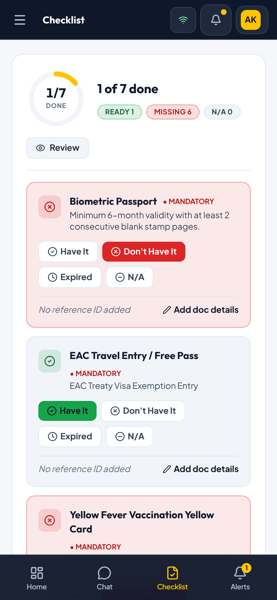
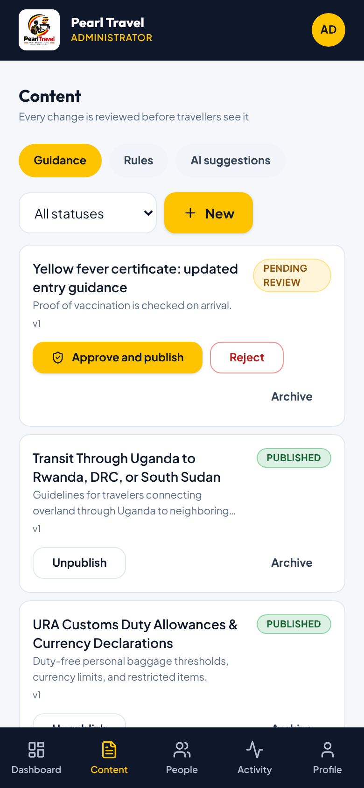
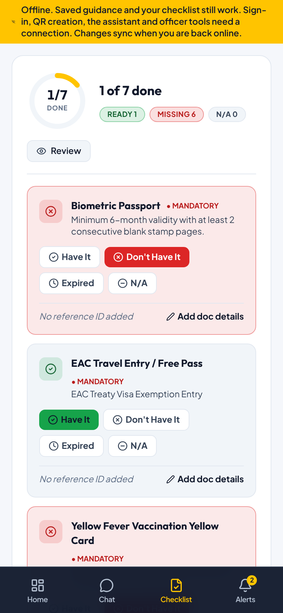

1Background
- Uganda’s land borders use e-Visa services and One-Stop Border Posts that clear both countries together.
- Malaba (Uganda–Kenya) is one of the busiest Northern Corridor crossings.
- Official systems focus on applications, not on traveller readiness.
2Problem
- Guidance is scattered across websites, notices and social media.
- Little personalisation by nationality and purpose of travel.
- Border-town internet is unreliable or costly.
- The size of the problem at Malaba is not yet established; the study investigates it.
Research gap: no traveller-centred tool for Uganda’s land borders combines a personalised checklist, readiness score, offline access and grounded Q&A.
3Objectives
Investigate traveller and official information needs.
Build a verified knowledge base of official requirements.
Design the profile model, rule engine and architecture.
Build a working prototype.
Evaluate correctness, answer quality, offline use, usability.
4Scope
- Site: Malaba OSBP only.
- Users: adult inbound travellers and clearance officials.
- Advisory only: no visas issued, no entry guarantee, officers decide.
5Methods
Design Science Research · mixed methods · Agile (5 sprints) · formative study
Data collection and evaluation
| Method | Plan |
|---|---|
| Traveller survey | 5 pilot of 40 target |
| Official interviews | 10 target |
| Usability (SUS, TAM) | 10 target |
| Document analysis | EAC OSBP Act, DCIC, URA |
| Technical tests | API, browser, offline, assistant |
Ethics: consent, anonymised officials, no passport numbers stored. Indicative, not generalisable.
6Conceptual framework
7Pilot survey (5 of 40)
Top problems: unreliable internet, unclear steps, repeat queues. Pilot only, not generalisable; target is 40.
8Try Pearl Travel
Scan to open the web app
pearltravelug.netlify.app
Web preview. Officer, admin and QR-pass demos run on the presenter’s laptop.
9System architecture
10The prototype in use






11Results so far
Keyword fallback, 27 unseen questions
21/27 (78%), run once, not tuned. First run: 34/39, five defects fixed. The one app-help miss (offline question) was fixed afterwards. The live AI assistant has not been benchmarked.
12Implementation status
| Accounts and profile | Completed |
| Rules by nationality + purpose | Completed |
| Checklist and readiness score | Completed |
| Signed, private QR pass | Completed |
| Offline PWA and sync | Completed |
| Officer, admin, database | Completed |
| Malaba guide and videos | Completed |
| Assistant (guidance + labelled AI answers) | Partial |
| React Native app (tested on a phone) | Completed |
| Official rule verification | Planned |
| Traveller survey (5 of 40) | Partial |
| Usability study (SUS, TAM) | Planned |
13Contribution and limits
- Contribution: personalised, offline pre-arrival guide with a private, verifiable QR pass.
- Not claimed: shorter queues.
- Limits: one site, 5 survey responses, rules not yet officially verified.
- Next: live RAG benchmark, device tests, user evaluation.
References: Hevner et al. (2004) MIS Quarterly; Peffers et al. (2007) JMIS; Davis (1989) MIS Quarterly; Brooke (1996) SUS; Lewis et al. (2020) RAG; EAC (2016) OSBP Act; Uganda Data Protection and Privacy Act (2019).